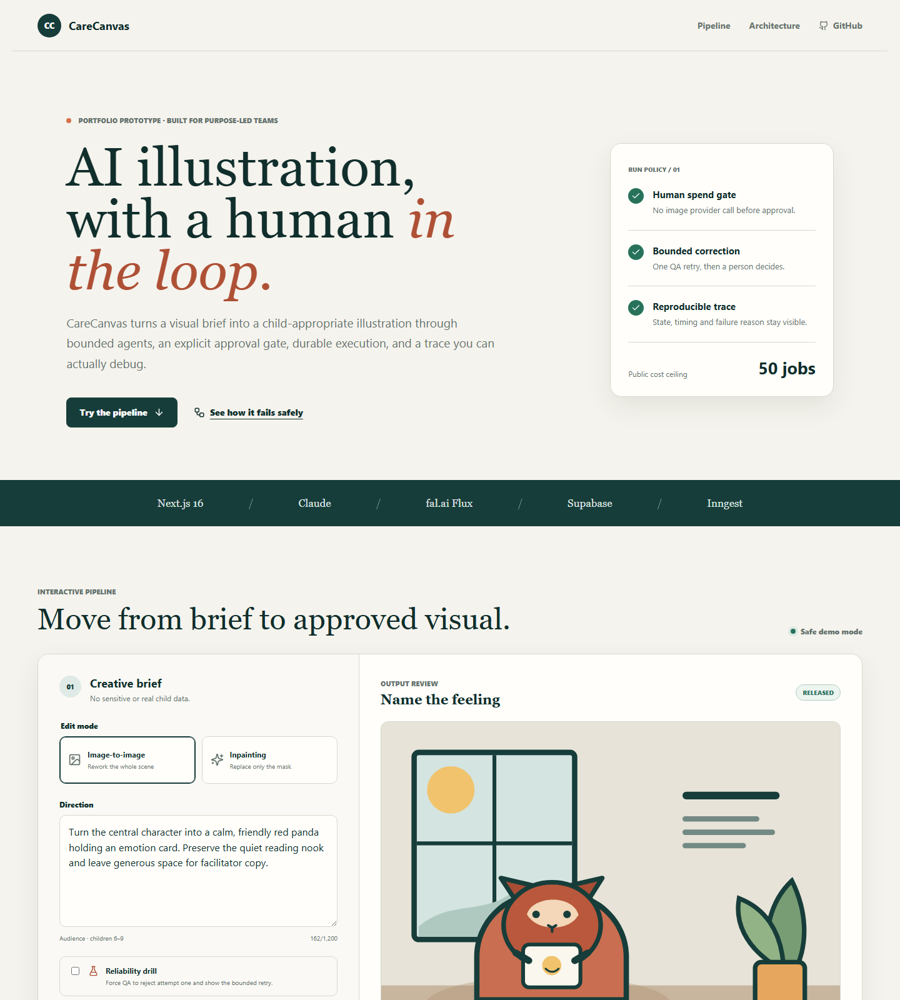

Flagship · public deterministic demo
01 / 02
Human-gated AI illustration pipeline
CareCanvas
A purpose-led AI prototype that turns a visual brief into a child-appropriate illustration through bounded agents, an explicit human approval gate, durable execution, and a trace a reviewer can actually debug.
- 19 / 19
- automated tests
- 2
- bounded attempts
- 96
- QA drill score
- 0
- paid calls in demo

- 01BriefStructured intent
- 02SafetyStop before spend
- 03ApproveHuman gate
- 04GenerateFlux adapters
- 05Visual QAOne bounded retry
Implemented evidence
The boundary work is visible.
Explicit state transitions, Inngest approval waits, Claude and Flux adapters, owner-scoped Supabase RLS, raw-body Ed25519 webhook verification, and recruiter-readable traces.
Honest release boundary
The demo proves orchestration.
The deployed reliability drill completes in two attempts and eight trace steps. Paid-provider execution remains environment-gated and is not presented as verified.